Purpose
These are a few preliminary examples relating to particle traps using pure electrostatic fields (no RF or magnetic fields), particularly of the "orbital" variety such as Kingdon traps and variants such the Knight and orbitrap, which exhibit quadro-logarithmic potential fields. For background, see Doc(Electrostatic Trap).
Files in this demo:
- README.html - description of this example.
- twocylinder_1dc.iob - A cylindrical capacitor like geometry of
infinite concentric cylinder electrodes generating a
pure logarithmic field, trapping particles radially (not axially).
- twocylinder_1dc.fly2 - particles
- twocylinder_1dc.gem - infinite concentric cylinder geometry. 2D cylindrical X mirror. Generates twocylinder_1dc.pa#/pa0.
- twocylinder_1dc.lua - workbench user program preventing particles from flying forever.
- kingdon_2dc.iob - A Kingdon-trap like geometry, which is like
twocylinder_1dc.iob but with end cap electrodes to
also trapping particles axially.
- kingdon_2dc.fly2, kingdon_2dc.gem, kingdon_2dc.lua - analogous to previous example.
- quadro_logarithmic.iob - like kingdon_2dc.iob but with ideal
quadratic + logarithmic fields (orbitrap-like geometry)
- quadro_logarithmic.fly2 - particles
- quadro_logarithmic_build.lua - programmatically builds quadro_logarithmic.pa, which will have the special analytically shaped electrode surfaces required. This script is called automatically by quadro_logarithmic.lua but also may be executed by itself ("Run Lua Program" on main screen).
- quadro_logarithmic.gem - GEM file creating empty PA. This file exists merely so that the PA file is created on IOB load. The PA is actually filled later by quadro_logarithmic_build.lua instead.
- quadro_logarithmic.lua - workbench user program. Similar to as in other examples but also invokes quadro_logarithmic_build.lua on IOB load.
- Optional: quadro_logarithmic_macro.gem - This is an alternative approach to quadro_logarithmic_build.lua. It defines the analytic electrode surfaces using GEM macros rather than the Lua PA API.
- calc.lua - optional script to do a simple calculation of the required particle energy for a logarithmic field.
Cylindrical Capacitor - Logarithmic Radial Field (twocylinder_1dc.iob)
A Kingdon trap involves both radial and axial trapping fields, so it's important to understand the effect of each of these fields individually. We'll first examine the radial field, which in the ideal case may be formed by two infinitely long concentric cylinders.
As previously seen for a cylindrical capacitor or cylindrical mirror analyzer (CMA), given two infinite concentric cylinders of radius R1 and R2 (
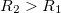
R_1\)" style="vertical-align:text-bottom" />) and potentials V1 and V2 respectively, the potential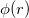
at a radius r is a logarithmic function of r: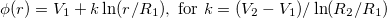
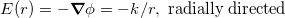
SIMION plots of the field are shown below. Notice the slight decrease in potential contour spacing near the center electrode (due to the 1/r form of E).
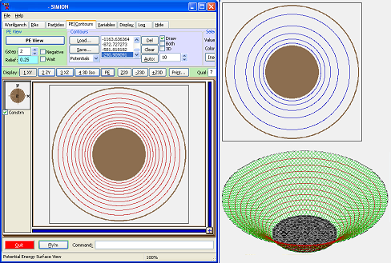
Figure: (left) potential contours; (upper right) potential gradient contours (magnitude of electric field); (lower right) PE surface.
An ion trapped in this system will have a perfectly circular orbit if its velocity has a direction perpendicular to the axial plane and a magnitude such that the centripetal force (q Er) due to the electric field cancels the centrifugal force
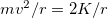
, for kinetic energy K. This occurs at the kinetic energy K = k q / 2 , which is independent of r.Shown below are particle trajectories flown in the cylindrical capacitor (twocylinder_1dc.iob), where the black (r=10 mm) and green (r=15 mm) trajectories have 1746.17 eV, causing perfectly circular orbits, while the red (r=10 mm) and blue (r=15 mm) orbitals have 800 eV less energy, causing more irregular processions bounded by two radii. The red trajectory in fact quickly hits the inner electrode. It's conceptually similar to orbits of planets and comets around the sun.
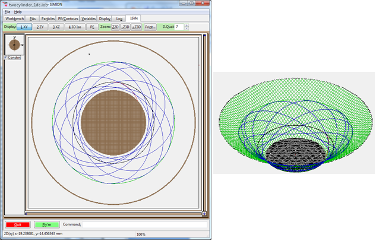
Figure: (left) particle trajectories viewed from XY plane; (right) particle trajectories superimposed on PE view.
We are assuming no axial component to particle velocity. Since there are no axial forces, if a particle had an axial velocity, it would travel along the axial at a constant rate and escape the trap. Trapping in the axial direction is addressed in the next section.
SIMION modeling notes: This electric field is one-dimentional since it depends only on the cylindrical coordinate r. In SIMION, we can model such a field with a 2D cylindrical PA, though you can almost think of it as a 1D cylindrical PA since we can get away with using the fewest allowed number of points (3) in the axial (x) direction and well as using X mirroring, as seen in twocylinder_1dc.gem. (Optionally, you may also set the cell size in the x direction to a much larger size than in the y direction, as done here.)
Notes on wire radius: The inner cylindrical electrode could be replaced with a much thinner cylindrical wire (as actually used in the Kingdon/Knight traps). Note, however, that the equipotential surfaces in that modified system will still be concentric cylinders, one of which will coincide with the previous surface of the inner cylinder. This implies (by the Laplace equation first uniqueness theorem) that it's possible to make the fields of these two systems identical by appropriate choice of potential, except of course the region of empty space being added near the center (which perhaps particles don't even enter and therefore are not of concern). In other words, the choice of cylinder radii in this example is somewhat arbitrary when analyzing basic physics (which is all this example really cares to do) because, apart from determining where particles splat, any change to fields by changing cylinder radii could alternately be effected simply by appropriate change in electrode voltages, and the latter is very conveniently done by Fast Adjust. Another possible concern is that if you make the inner cylindrical wire very thin (think: extreme case of a 1 mm radius wire in a 1 m radius chamber), you will need to ensure there are enough PA grid points along the radius of that wire to ensure accuracy (this increases memory usage and calculation time but in practice poses more of a challenge if a very thin wire were modeled with a 3D array thin while still desiring the highest accuracy). Wire radius will, however, affect field shape in a fundamental way in the next example where we have fringe fields.
Kingdon Trap with End Caps - Axial and Radial Trap Fields (kingdon_2dc.iob)
The example kingdon_2dc.iob is similar to twocylinder_1dc.iob but adds end caps that trap ions in the axial direction too.
Here is a 3D view with half the cylinder cutaway for viewing:
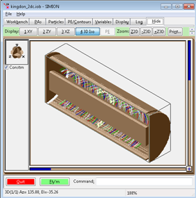
Figure: 3D cutout view of kingdon_2dc.iob, with particle trajectories.
Trajectories are shown below. Some ions are given an axial component to velocity in order to illustrate axial trapping as well. Notice that potential increases near the outer cylinder and near the end caps (where the field is no longer logarithmic). The particles will be repelled by the end caps and therefore bounce back and forth in the axial direction (much like in a linear ion trap).
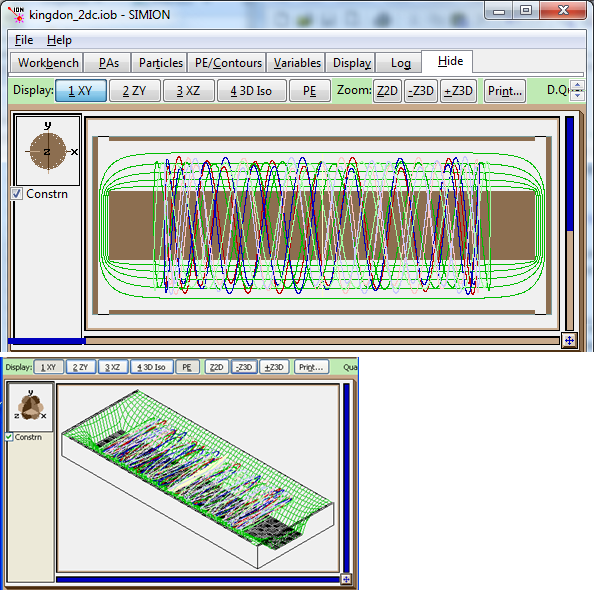
Figure: (top) Particle trajectories viewed from XY plane; (bottom) particle trajectories superimposed on PE plot.
Below is what the field looks like using a much thinner central wire:
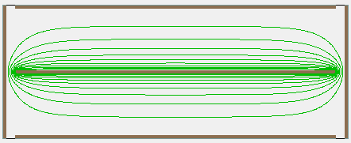
Figure: Equipotential contours when using a much thinner central wire (r1=0.5 mm in kingdon_2dc.gem).
SIMION modeling notes: The electric field is defined by a 2D cylindrical PA (generated from kingdon_2dc.gem). This also can utilize mirroring in the axial direction (x plane), although presently that isn't done here.
Quadro-Logarithmic Potential (quadro_logarithmic.iob)
The shape of the above trapping field was refined in the Knight trap and (more prominently) refined further in the orbitrap [4] to have an ideal "quadro-logarithmic field", which is logarithmic in the radial direction and quadratic in the axial direction. The quadro-logarithmic field is defined by the potential [1-3]:
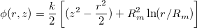
Such a field can be generated with electrodes having a special analytic shape.
In such a field, oscillation frequencies of particles [5] in each cylindrical coordinate (z, r, φ) should be
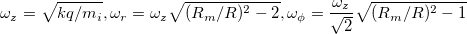
The quadro_logarithmic.iob example is a simple simulation of particle trajectories in a quadro-logarithmic ("orbitrap"-style) field and is shown below.
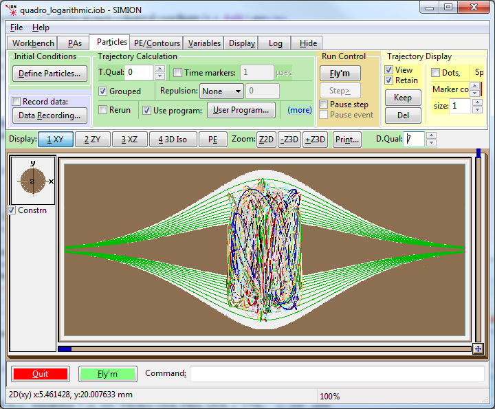
Figure: quadro_logarithmic.iob example, showing potential contours (green) of ideal quadro-logarithmic field and particle trajectories (multi-colored) flying around the center spindle.
Note that this is an idealized example provided as a starting point and for exploration of the basic physics. A real system, like the Thermo LTQ Orbitrap™, would need a way to inject particles into the trap, for example.
SIMION modeling notes: The included "quadro_logarithmic_build.lua" script may be used to generate a PA with the special surface geometry. This script can be invoked from the "Run Lua Program" button on the SIMION main screen. It is also invoked automatically (via the workbench user program quadro_logarithmic.lua) on loading the quadro_logarithmic.iob. The Lua PAs API (simion.pas) is used to define the electrode surface analytically. In fact, it also defines the non-electrode potentials analytically, so you don't even need to refine this array. This system is modeled with a 2D cylindrical PA with X (axial direction) mirroring, but it may easily be converted to a 3D PA. An alternate way to create the geometry is by a GEM file with special macros (quadro_logarithmic_macro.gem). This example uses surface enhancement to improve accuracy given curved surfaces.
Using the demos
- These examples can be used in the normal way. Click View/Load Workbench on the main screen and select one of the IOB files. In some examples, you will be prompted to refine on load (choose Yes and ignore any warning in twocylinder_1dc.iob about "Array dimension is less than 11"). Then click Fly'm. Note: You may wish to fly with "Grouped" enabled on the Particles tab.
- Examine XY and ZY views in particular, as well as PE views.
- Orbit frequencies can be determined by enabling Data Recording of "Time of Flight (TOF)" when "Crossing Plane X/Y/Z" is some value (see Particles tab > Data Recording).
- Examine how the geometries are defined. Two geometries are created by GEM files (twocylinder_1dc.gem and kingdon_2dc.gem). However, quadro_logarithmic.pa is created in a special way by a Lua script (quadro_logarithmic_build.lua). You can examine all of these in a text editor. Refer to the The Lua PAs API (simion.pas) for details on how the quadro_logarithmic_build.lua (you can also look at Example(swirl) in comparison).
- Examine the user programs (.lua files) in a text editor. You can do so just by clicking the User Program Button on the Particles tab. These mainly are used to limit the simulation time (preventing the particles from flying forever). The maximum time can be controlled from the Variables tab.
See Also
- Doc(Electrostatic Trap) - discusses the Kingdon trap, Knight trap, orbitrap, and other types of electrostatic ion traps in the context of SIMION.
- Wikipedia: Kingdon trap - general background
- Perry, Richard H.; Cooks, R. Graham; Noll, Robert J. "Orbitrap mass spectrometry: Instrumentation, ion motion and applications." Mass Spectrometry Reviews. volume 27, issue 6, year 2008, pp. 661-699, doi:10.1002/mas.20186 - article showing SIMION orbitrap simulations
- Oksman1995. Oksman, P. "A Fourier transform time-of-flight mass spectrometer. A SIMION calculation approach." International Journal of Mass Spectrometry and Ion Processes. volume 141, issue 1, year 1995, pp. 67–76. doi:10.1016/0168-1176(94)04086-M. - early electrostatic trap with SIMION calculations.
- [4] Dr. Alexander Makarov. "Orbitrap Mass Spectrometry: from Dream to Mainstream." 2009. thermo.com: File_52781.pdf
- [5] Makarov2010. Makarov, Alexander. "Theory and Practice of the Orbitrap Mass Analyzer." year 2010, pp. 251-272. doi:10.1201/9781420083729-c3
- Example(trap), Example(quad), -- RF ion trap (paul trap) and RF quad mass filter, providing quadrupole field.
- Example(icrcell) - ICR cell (penning trap)
- Example(electrostatic_induction) - image charge detection (which can also be used in electrostatic traps)
- Example(swirl) is another example of using the Lua PAs API to generate a special PA surface analytically.
References
- [1] Korsunskii M.I., Basakutsa V.A. Sov. Physics-Tech. Phys. 1958; 3: 1396.
- [2] Knight, R. D. "Storage of ions from laser-produced plasmas." Applied Physics Letters. volume 38, issue 4, year 1981. p. 221. doi:10.1063/1.92315
- [3] Gall L.N.,Golikov Y.K., Aleksandrov M.L., Pechalina Y.E., Holin N.A. USSR Inventor’s Certificate 1247973, 1986.
Source/History
- 2012-11-15 - quadro_logarithmic_maro.gem - increase number of polyline points, improve GEM subroutine style, enable surface enhancement.
- 2012-07-30 - quadro_logarithmic_build.lua now enables surface enhancement and can evaluate Refine error.
- 2012-03 - update and add to SIMION examples.
- 2009 - initial version